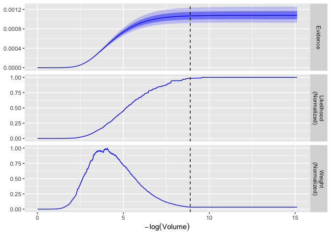

ernest provides a toolkit for performing the nested sampling algorithm to estimate the marginal likelihood (i.e., evidence) and posterior distributions of statistical models. To this end, ernest aims to accomplish two different goals:
- If you’re unfamiliar with nested sampling, ernest and its documentation will allow you to learn how nested sampling works and how you might incorporate it within your analyses.
- If you’re already familiar with nested sampling, ernest provides a powerful and reliable implementation of the algorithm and different likelihood-restricted prior samplers, allowing you to complete and analyse runs with existing tools offered by ggplot and posterior.
Installation
You can install the development version of ernest from GitHub with:
# install.packages("devtools")
devtools::install_github("kylesnap/ernest")Example
To perform nested sampling, R requires two R functions: (1) A log-likelihood function, describing the likelihood of each point within the prior space, and a prior transformation function, which can use points in the (0-1)-unit cube to represent points in the prior space. As a simple example, we can use a 3D, highly correlated normal distribution, with a uniform prior in the range of -5 to 5.
library(ernest)
n_dim <- 3
sigma <- diag(n_dim) # Covariance matrix
sigma[sigma == 0] <- 0.4
inv_sigma <- solve(sigma) # Precision matrix
det_sigma <- det(sigma) # The determinant of the covariance matrix
l_norm <- -0.5 * (log(2 * pi) * n_dim + log(det_sigma))
# Log-likelihood of the multivariate normal distribution
log_lik <- function(x) {
-0.5 * drop(crossprod(x, crossprod(inv_sigma, x))) + l_norm
}
# Prior transformation function: (0, 1) -> (-5, 5)
prior_transform <- function(u) {
5. * (2. * u - 1.)
}With these functions, we call [nested_sampling()] to build an ernest_sampler object. This object contains several S3 methods, including:
-
generate(): Perform the nested sampling algorithm until a given criteria is met. -
calculate(): Prepare a table of iterative model evidence estimates, along with point-wise log-likelihoods and posterior importance weights.
sampler <- nested_sampling(
log_lik,
prior_transform,
ptype = n_dim,
verbose = TRUE
)
run <- generate(sampler, min_logz = 0.01)
run
#>
#> ── Nested Sampling Run from ernest ─────────────────────────────────────────────
#> No. Live Points: 500
#> No. Iterations: 4451
#> No. Calls: 111275
#> Log Evidence: -6.83435374840042
calculate(run)
#> # A tibble: 4,951 × 7
#> .iter log_lik log_vol log_weight log_z log_z_var information
#> <int> <dbl> <dbl> <dbl> <dbl> <dbl> <dbl>
#> 1 1 -52.9 -0.00200 -59.8 -59.8 9.23e-25 -4.62e-22
#> 2 2 -51.2 -0.00400 -58.0 -57.8 6.45e-24 -3.23e-21
#> 3 3 -47.6 -0.00599 -54.5 -54.4 1.76e-22 -8.82e-20
#> 4 4 -47.3 -0.00799 -53.7 -53.3 5.45e-22 -2.73e-19
#> 5 5 -46.9 -0.00999 -53.3 -52.6 1.06e-21 -5.28e-19
#> 6 6 -45.7 -0.0120 -52.4 -51.8 2.35e-21 -1.18e-18
#> 7 7 -44.7 -0.0140 -51.3 -50.8 6.01e-21 -3.01e-18
#> 8 8 -44.1 -0.0160 -50.6 -50.0 1.35e-20 -6.77e-18
#> 9 9 -43.6 -0.0180 -50.1 -49.3 2.60e-20 -1.30e-17
#> 10 10 -41.7 -0.0200 -48.5 -48.2 8.13e-20 -4.07e-17
#> # ℹ 4,941 more rowsWe can also use the plot() method to visualize the iterative estimations performed during the run, and use the posterior package to resample from and summarize the posterior distribution.
plot(run)
posterior::as_draws(run) |>
posterior::resample_draws() |>
posterior::summarize_draws()
#> # A tibble: 3 × 10
#> variable mean median sd mad q5 q95 rhat ess_bulk ess_tail
#> <chr> <dbl> <dbl> <dbl> <dbl> <dbl> <dbl> <dbl> <dbl> <dbl>
#> 1 X...1 -0.0479 -0.0501 1.04 1.06 -1.76 1.67 1.18 1315. 13.0
#> 2 X...2 -0.00846 -0.0304 1.00 0.975 -1.65 1.59 1.19 1016. 13.8
#> 3 X...3 -0.000163 0.0197 0.992 0.992 -1.63 1.65 1.17 1300. 14.2Status
ernest is still quite experimental, and additional features are intended to be added in the future. While we hope to avoid them, this does mean that certain components of ernest may be subject to breaking changes.
If you encounter any issues or have any suggestions, please feel free to open an issue.
Acknowledgements
The nested sampling algorithm was first developed and introduced by J. Skilling across two major papers:
- Skilling, J. (2004). Nested sampling. In R. Fischer and R. Preuss and U. V. Toussaint (Eds.), Bayesian Inference and Maximum Entropy Methods in Science and Engineering (pp. 395-405). AIP. 10.1063/1.1835238
- Skilling, J. (2006). Nested sampling for general Bayesian computation. Bayesian Analysis, 1(4), 833-859. 10.1214/06-BA127
ernest’s design takes much inspiration from from the well-documented dynesty package:
- Speagle, J. S. (2020). DYNESTY: A dynamic nested sampling package for estimating Bayesian posteriors and evidences. Monthly Notices of the Royal Astronomical Society, 493(3), 3132-3158. 10.1093/mnras/staa278
- Koposov, S., Speagle, J. S., Barbary, K., Ashton, G., Bennett, E., Buchner, J., Scheffler, C., Cook, B., Talbot, C., Guillochon, J., Cubillos, P., Ramos, A. A., Dartiailh, M., Ilya., Tollerud, E., Lang, D., Johnson, B., jtmendel, Higson, E., … Goldstein, D. (2021). dynesty (Version 1.1.1.) [Python package]. 10.5281/zenodo.4543937
In addition, the nestle python package and an article from J. Buchner provide consistent and clear terminology to describe and organize components of the nested sampling algorithm:
- Buchner, J. (2023). Nested sampling methods. Statistics Surveys, 17, 169-215. 10.1214/23-SS144